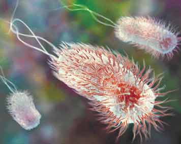

1NA - BIOLOGI |
|||
| NB! EMNER MERKET MED * GJELDER IKKE YRKESFAG! | |||
|
ØKOLOGI |
Økosystemmangfold
og organismebiologi - en introduksjon fra Skolelaboratoriet i
biologi ved UiO. |
||
| CELLEBIOLOGI
OG KROPPEN VÅR  |
*Celler
og virus (am.), om virus, bakterier, planteceller og dyreceller, samt
mitose (vanlig celledeling). |
||
|
GEN-
OG BIOTEKNOLOGI |
|||
|
BIOLOGIHISTORIE |
En oversikt over personer som har gitt viktige bidrag til biologien gjennom de siste 1000 år - fra Klaus Høiland ved UiO. |
||